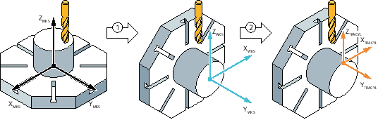

The TRACYL transformation is used for machining round, centrically clamped workpieces on the cylinder surface.
The motion of XY in the working plane G17 is transformed into a CY motion. The transformation is parameterized in connection with CYCLE800. CYCLE800 is used to swivel the rotation axis of the workpiece perpendicular to the spindle axis.
① | Swivel plane, Z180°, X90° |
② | TRACYL |
Please note for the order of geometry axes that by using CYCLE800 the assignment of the geometry axes has to be adapted specifically for this configuration.
The exact swivel setting of the CYCLE800 used (especially the rotations and the selection of the +/- solution) must be documented by the machine manufacturer.
Changing the orientation of the WCS via CYCLE800 causes the transformation to behave differently.
The transformation is parameterized in such a way that the WCS X axis is mapped by rotary axis C, the WCS Y axis runs parallel to the cylinder axis, and the WCS Z axis is the infeed axis. The resulting unwinding is to be considered like the plane "G17" on a 3-axis milling machine.